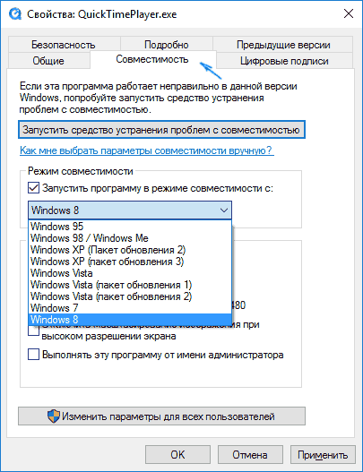
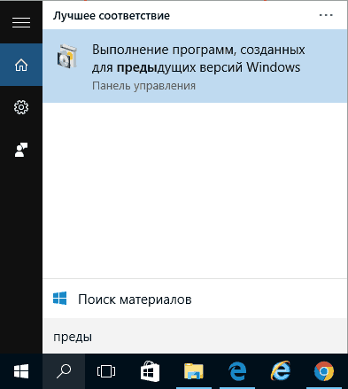
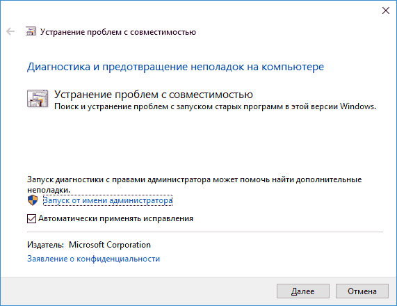
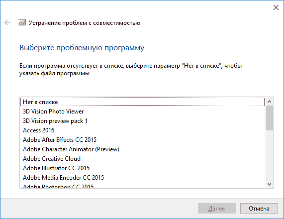
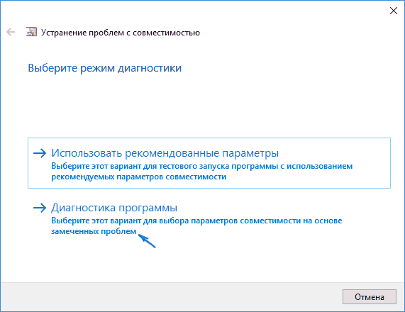
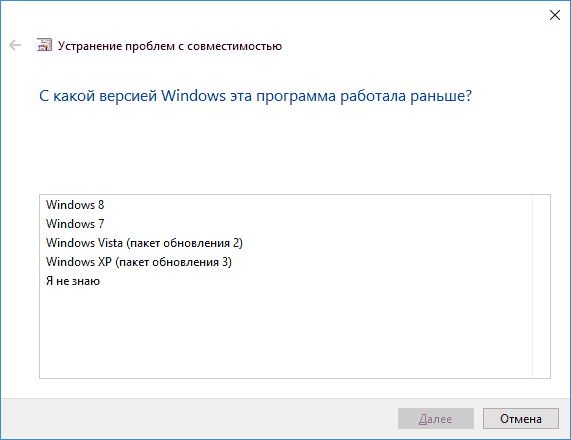
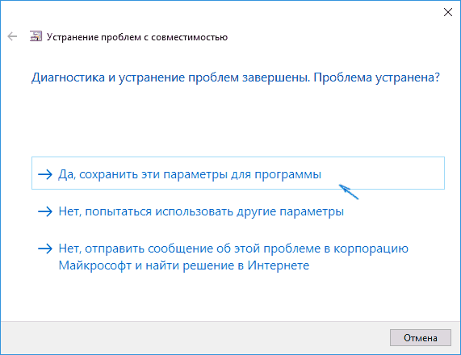

Проблемы перехода на новые версии программ. Мастер совместимости программ. Инструментарий учета аппаратных компонентов.
Проблемы перехода на новые версии программ.
Основные этапы перехода на последнюю версию ПО
1.Апгрейд (Upgrade).
На данном этапе происходит обмен одного из имеющихся у пользователя продукта на новый. Это предложение действует только для обладателей лицензионной системы. «Старая» программа остается у клиента и ею можно пользоваться во время «переходного» периода.
2. Установка.
Предусматривает проведение самих работ, результат – рабочая новая версия ПО, которую можно сразу же использовать.
3. Перенос данных.
Необходимый этап в рамках, которого информация со старой версии переносится на новую.
4. Освоение.
Научиться работать с новой системой можно:
- самостоятельно, для этого выпускается специализированная литература;
- в специально созданных учебных центрах;
- индивидуально, с квалифицированным специалистом.
Несмотря на все преимущества новой версии, многие фирмы продолжают работать на базе старой.
Несомненно, рано или поздно они также почувствуют необходимость осуществить переход на новое ПО.
Так зачем же откладывать неминуемое?
Гораздо эффективнее уже сейчас испробовать все возможности новой версии.
Вопрос перехода с предыдущего ПО или ОС на более позднюю версию становится все более актуальным для компаний, до сих пор использующих это ПО в своей работе.
НАПРИМЕР : Срок действия поддержки Windows XP истёк 14 апреля 2014 года, после чего ИТ-отделам нужно будет оперативно переходят на Windows 7 или Windows 8.1, чтобы избежать проблем с обеспечением безопасности и несоответствия требованиям.
Стандартная процедура модернизации может занять не один месяц, а этого времени у организаций просто нет. Не менее важно, что ИТ-отделы не могут допустить расходования ресурсов на проекты ПО и приостановления ключевых процессов для поддержки мобильности предприятия.
Следовательно, необходимо решение, которое позволит осуществить миграцию со старого ПО, а также сделать шаг вперед и обеспечить условия для продуктивной работы современного штата сотрудников в любое время, в любом месте и с любого устройства.
Для перехода к более поздней версии ПО и трансформации предприятия ИТ-отделам и организации необходимо провести:
- Сокращение риска благодаря устранению опасных пробелов в системе безопасности и несоответствий, возникающих в результате продолжительного использования старого ПО;
- Увеличение продуктивности ИТ-отделов благодаря использованию виртуальных десктопов для перехода на последнее ПО;
- Экономия за счет доставки виртуальных приложений и десктопов на существующее аппаратное обеспечение
- Модернизация среды и предоставление сотрудникам возможности достигать большей эффективности при работе в любое время, в любом месте и на любом устройстве.
Безопасность
Окончание поддержки Windows XP также означает прекращение выпуска обновлений безопасности. ПК, которые на момент окончания поддержки продолжат использовать эту ОС, окажутся гораздо более уязвимыми к угрозам, вирусам, шпионскому ПО и другим вредоносным действиям.
Всего одна атака может подвергнуть опасному риску интеллектуальную собственность организации, данные клиентов, важную персональную информацию, повседневную деятельность и на долгое время привести к возбуждению исков и ущербу для репутации компании.
Риск является существенным уже сейчас: по данным Microsoft, на данный момент вероятность заражения Windows XP вредоносными программами в 21 раз выше вероятности заражения Windows 8, и эта цифра резко увеличится после того, как обнаруженные уязвимости в системе безопасности перестанут защищаться дополнениями или устраняться. В связи с повторным использованием кода в Windows XP и Windows 7/8.1, дополнения к последним версиям Windows могут привести к выявлению в Windows XP пробелов в системе безопасности, что позволит хакерам манипулировать компаниями, по-прежнему использующими эту платформу.
Соответствие стандартам
Как внутренние, так и внешние аудиторские проверки будут требовать от предприятий использования версий ПО с действующей поддержкой и со всеми установленными обновлениями; разумеется, это базовое требование, которое должна быть в состоянии выполнить любая организация.
Несоблюдение этих стандартов может легко привести к ущербу для бизнеса, повышенным ставкам за страхование предпринимательской деятельности и даже пробелам в системе страхового обеспечения бизнеса.
Последствия несогласованности могут оказаться особенно серьезными в отраслях, подвергаемых специальному надзору, таких как здравоохранение и финансовые службы, что приведет к утрате разрешений контролирующих органов.
Организации со сторонними поставщиками услуг и выполняемыми сторонними организациями контрактами
также могут столкнуться с проблемой отказа этих поставщиков от соглашений в отношении поддержки десктопов
для ПО, что приведет к еще большим трудностям.
Увеличивающийся уровень сложности
Окончание поддержки Windows XP выявит массу вытекающих одна из другой проблем, не ограничивающихся вопросами безопасности и соответствия нормативным требованиям.
Многочисленные зависимости от платформ и технологии других компаний, обычно используемые в среде предприятия, потенциально усложняют предстоящий переход к более поздним версиям ПО (Windows), а уровень сложности будет возрастать по мере переноса этих элементов инфраструктуры в среды, несовместимые с Windows XP.
Необходимость разрешения этих проблем, а также проблем, связанных с вопросами безопасности и совместимости, будет делать работу ИТ-отделов все более и более сложной и времязатратной и отнимать как кадровые, так и финансовые ресурсы, которые можно было бы направить на более стратегически важные задачи.
Деятельность ИТ-отдела может быть парализована как раз в моменты возникновения новых, наиболее приоритетных задач, среди которых обеспечение мобильности организации и ориентации на потребителя.
Переход к более поздней версии ПО является вопросом как осуществить его наилучшим образом. Для большинства организаций модернизация ПО является крупнейшим за многие годы мероприятием, касающимся КС.
Проект может потребовать большого бюджета, ресурсов и времени и привести к возникновению серьезных проблем как для ИТ-отделов, так и для пользователей.
Каким образом осуществить переход к более поздней версии ПО в кратчайшие сроки и с меньшими затратами?
Проблемы, возникающие при традиционной модернизации операционной системы, хорошо знакомы любому опытному ИТ-специалисту.
Децентрализованные методы осуществляемого вручную перехода от одной версии ОС к другой и методы управления десктопами требуют значительных временных затрат, они сопряжены с риском ошибок и не соответствуют требованиям рассредоточенного по всему миру штата сотрудников, которые используют все более широкий перечень устройств.
Вопросы, касающиеся совместимости приложений, делают процесс перехода от одной версии ОС к другой еще более продолжительным, поскольку ИТ-отделы должны тестировать и переписывать многочисленные приложения одно за другим для ряда различных платформ.
Исключите проблемы, связанные с совместимостью приложений.
Многие организации используют важнейшие для них приложения, которые несовместимы с версиями ПО более новыми, что создает серьезные препятствия для модернизации ОС. Более того, вы можете не знать, сколько таких приложений может быть или к какому типу они относятся.
Нужно определять место каждого приложения с точки зрения совместимости, прежде чем сделать шаг вперед. Пользователи смогут без проблем получать доступ как к устаревшим приложениям, так и к обновленным приложениям в течение всего процесса.
Обеспечьте защиту пользовательских данных в кратчайшие сроки.
Пока данные остаются на конечных устройствах на базе старой ОС, организации ежедневно подвергаются риску нарушения безопасности, воздействия вредоносных программ, несоответствия нормативным требованиям и наложения штрафов контролирующими органами. Даже модернизированный ПК или мобильное устройство подвержены риску утери, кражи или перехвата интеллектуальной собственности, данных клиента или важной личной информации. ОС без действующей поддержки увеличивает такую уязвимость в несколько раз.
В распоряжении ИТ-отделов оказывается весь арсенал возможностей для контроля доступа, аудита и составления отчетов, позволяющий обеспечить соответствие нормативным требованиям и стандартам ИТ.
Доставляйте приложения на существующее аппаратное обеспечение и сокращайте расходы.
Как и в случае с любой другой модернизированной ОС, для эффективного функционирования нового ПО может потребоваться и модернизация конечных устройств пользователей. Это предполагает дополнительные капитальные и операционные расходы и создает новые трудности, касающиеся логистики.
Чтобы не поддерживать практически бесконечное разнообразие пользовательских конфигураций (каждая из которых имеет свой собственный набор потенциальных конфликтов и сбоев), необходимо использовать единый стандартный образ для поддержки сотрудников вне зависимости от используемого ими устройства.
От миграции к трансформации
После решения вопроса перехода к более поздней версии ПО, важно обратить внимание на главные стратегические инициативы, касающиеся мобильности предприятия, и добиться прогресса в этом направлении.
Приведение вашей среды в соответствие с современными стандартами — это только начало; вам также необходимо ориентироваться на перемены, которые произойдут в будущем, и гарантировать, что используемое вами решение поможет эффективно реагировать на растущие требования.
Это позволит решить задачи, связанные с переходом к более поздней версии ПО, и трансформировать вашу среду в соответствии с актуальными потребностями в рамках одного и того же решения.
Предоставьте современному штату сотрудников возможность эффективно работать в любое время и в любом месте
Сегодняшним пользователям необходима возможность эффективно работать в любом нужном им месте и в любое время. Организациям необходим действенный способ, позволяющий поддерживать гибкий формат работы и другие программы обеспечения мобильности, а также обслуживать удаленных работников и сотрудников филиалов.
Предоставьте сотрудникам возможность использовать любые устройства в любом месте
На предприятиях все более интенсивно используются устройства разного типа, включая тонкие клиенты, смартфоны и планшеты. Новое поколение сотрудников рассчитывает, что сможет использовать для работы свои собственные персональные устройства — как в офисе в рамках программы использования собственных устройств сотрудников (Bring-Your-Own-Device, BYOD), так и в более неформальном режиме в нерабочее время. Мобильным сотрудникам требуется возможность переходить с одного устройства (ноутбука, планшета или смартфона) на другое в течение дня.
Пользователям, находящимся в удаленных подразделениях или филиалах, необходима гибкость в вопросах выбора подходящих устройств, соответствующих их потребностям, и возможность быстро менять устройства в случае возникновения технических проблем. ИТ-отделам требуется обеспечивать подрядчикам и партнерам доступ к приложениям и десктопам без необходимости предоставлять и обслуживать принадлежащие компании устройства.
Обеспечьте соответствие своей ИТ-стратегии требованиям завтрашнего дня
Сложно вводить изменения, если ваше внимание и ресурсы затрачиваются на поддержание традиционной инфраструктуры десктопов.
Благодаря этому вы можете более оперативно и эффективно реагировать на быстро меняющиеся требования к мобильности предприятий и гарантировать своевременность бизнес-преобразований в своей организации.
Пошаговая модель для вашего мероприятия перехода на новое ПО
Как серьезное мероприятие, предполагающее вовлечение всей организации, проведение перехода от старого ПО к более поздней версии требует тщательно продуманной стратегии и детального планирования. Особенности такого подхода будут отличаться в каждой отдельной организации, но обозначенные ниже шаги представляют собой универсальную модель, на которой должен строиться ваш процесс планирования.
Шаг 1: определение приоритетности бизнес-мероприятий
Проведение обновления является уникальным для каждой организации, которая внедряет решение.
Выбор различных параметров, от способов доставки до конечных устройств (ПК, ноутбуков, тонких клиентов, планшетов), будет зависеть от таких факторов, как потребности различных типов пользователей внутри организации, задачи, которые они выполняют, и места, в которых они работают.
Оценивая бизнес-приоритеты и требования, вы должны:
- определить заинтересованные в проекте стороны и организовать с ними встречу;
- прийти к согласию относительно главных определяющих параметров проекта;
- определить приоритетность таких параметров, опираясь на стратегические требования;
- документально зафиксировать эти параметры и передать для одобрения.
Шаг 2: сбор данных
Прежде чем приступить к анализу вашей среды, важно собрать актуальные данные относительно пользователей, приложений и устройств, прибегнув к одному из трех подходов: сбору вручную, опросу или автоматизированному сбору.
- Сбор данных вручную: несмотря на то, что сбор данных о пользователях и приложениях можно осуществить, посещая или подключаясь удаленно к каждому отдельному десктопу, этот подход нельзя назвать идеальным. Сбор данных вручную требует серьезных временных затрат, что делает его использование оправданным лишь для самых маленьких компаний. Кроме того, использование этого метода предполагает трудности, связанные с пониманием требований производительности в динамике.
- Опрос: чтобы свести к минимуму необходимость личного вмешательства, ИТ-отделы могут подготовить опрос по требованиям пользователей и приложений, который должен будет пройти каждый коммерческий управляющий, предоставив информацию о своем подразделении. Это экономит время работающей над проектом команды, но, как правило, приводит к нехватке данных, поскольку вероятность того, что каждый управляющий в организации заполнит опросник, невелика.
- Автоматизированный сбор данных: существует ряд инструментов для инвентаризации, позволяющих автоматизировать сбор информации самых разных типов, включая информацию об использовании приложений и требованиях производительности. Недостаток этого подхода заключается в том, что его нельзя использовать для определения бизнес-характеристик, таких как критичность приложения или требования, касающиеся лицензирования и безопасности.
Максимально эффективный подход предполагает использование опроса для выявления бизнес-характеристик и автоматизированных инструментов для определения технических характеристик.
Шаг 3: анализ среды и сегментирование пользователей
Чтобы переход к более новой версии ПО и трансформация ИТ-отделов прошли максимально успешно, необходимо полное понимание имеющейся у вас среды. Сюда относится следующее:
- Сегментирование пользователей по принципу привычных для них способов работы и общих требований. Обычно сегменты включают работников одной операции, временных работников, удаленных работников, офисных работников, подключенных по локальной сети, офисных работников, подключенных по глобальной сети, и мобильных работников.
- Оценка существующих конечных устройств, позволяющая установить, может ли использоваться устройство каждого типа после перехода к более поздней версии ОС и трансформации, и если да, то каким образом.
- Анализ использующихся приложений. Основываясь на таких факторах, как пользовательский профиль, требования в отношении ресурсов и технические требования, вы можете определить наилучший способ интеграции каждого.
По результатам такого анализа вы можете разделить пользователей на группы, опираясь на стандартный набор характеристик. После этого для каждой группы можно подобрать нужный тип десктопа, который позволит обеспечить соответствие ее требованиям в отношении производительности и функциональности самым эффективным способом.
Для простоты в группы пользователей, как правило, включают работников, выполняющих одну или несколько различных ролей в организации (например, отдел кадров, отдел маркетинга и финансов), но при необходимости распределение по группам можно производить и на уровне отдельных пользователей.
Всех пользователей внутри группы должны определять пять общих характеристик:
- рабочая нагрузка (включает требования к процессору, памяти, дискам и графике);
- мобильность (требуется ли пользователям данной группы переключаться с одного из множества устройств на другое, подключаться удаленно или работать без подключения к Интернету);
- персонализация (необходима ли пользователям данной группы возможность устанавливать индивидуальные параметры для своих сессий или десктопов);
- безопасность (в том числе вопрос приемлемости операционных систем с несколькими пользователями и устанавливаемых пользователями приложений, а также необходимость статического IP-адреса или MAC-адреса Media Access Control);
- критичность (время бездействия, которое считается допустимым для пользователей данной группы).
Шаг 4: рационализируйте свои приложения
Опираясь на данные, полученные в шаге 2, вы можете сократить масштабы запланированного мероприятия, исключив необходимость выполнения лишней работы.
- Сделайте свой проект проще, сократив список приложений до необходимого минимума. Это включает консолидацию версий приложений за счет удаления лишних или устаревших версий.
Обязательно отправьте свой рационализированный список приложений собственникам приложений и предприятия, чтобы удостовериться, что вы не удалили ничего важного.
Шаг 5: решайте связанные с совместимостью приложений вопросы в удобном для вас темпе
Чтобы быстро приступить к переходу от старого ПО к более поздней версии, начните с приложений, про которые вам уже известно, что они будут совместимы с новой ОС, и приступите к реализации одной из множества стратегий по доставке приложений.
Что касается приложений, которые не готовы к переходу на более позднюю версию ОС, то вы можете либо разрешить связанные с ними проблемы, основываясь на полученной информации, либо отметить их как подлежащие замене.
По мере продвижения вперед вы сможете использовать моделирование отчетов для определения наиболее подходящей платформы для каждого приложения, а также автоматизации и ускорения различных процессов, от профилирования, тестирования и установки последовательностей до создания готовых к развертыванию пакетов.
Заключение
Для многих организаций окончание срока действия поддержки ПО является настоящим кошмаром, связанным с увеличением уязвимости системы безопасности, потенциальными несоответствиями, влекущими за собой серьезные расходы, и ростом проблем, касающихся управления. Тем не менее, еще не поздно свести к минимуму такие риски и решить проблему перехода к новой версии Windows рационально и эффективно решать эти задачи постепенно в соответствии с бизнес-требованиями и приоритетами предприятия. Сформированная таким образом среда позволяет добиться гибкости в вопросах предоставления приложений и десктопов по запросу, максимально соответствует потребностям предприятий и пользователей и обеспечивает необходимую современным сотрудникам мобильность, предоставляя возможность работать в любое время, в любом месте и на любом устройстве.
Мастер совместимости программ
Режим совместимости программ Windows 10 позволяет запускать ПО на компьютере, которое нормально работало только в предыдущих версиях Windows, а в последней ОС программа не запускается или работает с ошибками. В этой инструкции о том, как включить режим совместимости с Windows 8, 7, Vista или XP в Windows 10 для исправления ошибок запуска программ.
По умолчанию, Windows 10 после сбоев в программах предлагает автоматически включить режим совместимости, однако только в некоторых из них и не всегда. Ручное же включение режима совместимости, которое раньше (в предыдущих ОС) выполнялось через свойства программы или ее ярлыка, теперь доступно не для всех ярлыков и иногда требуется использовать специальное средство для этого. Рассмотрим оба способа.
Включение режима совместимости через свойства программы или ярлыка
Первый способ включить режим совместимости в Windows 10 очень просто — кликните правой кнопкой мыши по ярлыку или исполняемому файлу программы, выберите пункт «Свойства» и откройте, если таковая обнаружится, вкладку «Совместимость».

Все, что останется сделать — задать параметры режима совместимости: указать версию Windows, в которой программа запускалась без ошибок. При необходимости, включите запуск программы от имени администратора или в режиме меньшего разрешения экрана и пониженной цветности (для совсем старых программ). Затем примените сделанные настройки. В следующий раз программа будет запущена с уже измененными параметрами.
Как включить режим совместимости программ с предыдущими версиями ОС в Windows 10 через устранение неполадок
Чтобы запустить настройку режима совместимости программ, потребуется запустить специальное средство устранения неполадок Windows 10 «Выполнение программ, предназначенных для предыдущих версий Windows».
Сделать это можно либо через пункт панели управления «Устранение неполадок» (панель управления можно открыть через правый клик по кнопке Пуск. Чтобы увидеть пункт «Устранение неполадок» вверху справа в поле «Просмотр» должно стоять «Значки», а не «Категории»), либо, что быстрее, через поиск в панели задач.

Запустится средство устранения проблем с совместимостью старых программ в Windows 10. Имеет смысл использовать пункт «Запуск от имени администратора» при его использовании (это позволит применить параметры к программам, находящимся в папках с ограниченным доступом). Нажмите «Далее».

После некоторого ожидания, в следующем окне будет предложено выбрать программу, с совместимостью которой есть проблемы. Если вам нужно добавить собственную программу (например, в списке не будут отображаться portable-приложения), выберите пункт «Нет в списке» и нажмите «Далее», после чего задайте путь к исполняемому exe файлу программы.

После выбора программы или указания ее расположения, будет предложено выбрать режим диагностики. Для ручного указания режима совместимости с конкретной версией Windows, нажмите «Диагностика программы».

В следующем окне будет предложено указать проблемы, которые были замечены при запуске вашей программы в Windows 10. Выбираем «Программа работала в предыдущих версиях Windows, но не устанавливается или не запускается сейчас» (или другие варианты, по ситуации).

В следующем окне потребуется указать, с какой версией ОС включить совместимость — Windows 7, 8, Vista и XP. Выберите свой вариант и нажмите «Далее».
В следующем окне, чтобы завершить установку режима совместимости, требуется нажать «Проверить программу». После ее запуска, проверки (которую вы выполняете сами, необязательно) и закрытия, нажмите «Далее».

И, в завершение, либо сохраните параметры совместимости для этой программы, либо используйте второй пункт, если ошибки остались — «Нет, попытаться использовать другие параметры». Готово, после сохранения параметров программа будет работать в Windows 10 в выбранном вами режиме совместимости.